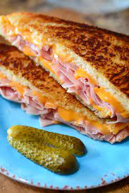

Grilled Ham & Cheese Recipe!

Description
This is a simple dish that's great when you need something in your stomach for lunch! This particular recipe is pretty high in calories (particularly from fat), but you can use lower calorie bread, cheese, non-stick spray/margarin, and leaner ham to cut calories and turn it into a satisfying, high-protien meal if you choose to!
Ingredients
- Two slices of bread
- Two slices of cheese
- Two slices of ham
- Two tbsp of butter
Steps
- Melt 2 tbsp of butter in pan on low-medium heat.
- Fry one side of two slices of bread until golden brown.
- Fry two slices of ham in pan alongside bread.
- Place 1 slice of cheese on each piece of bread.
- Place 1 slice of ham on each slice of bread.
- Pace 1 slice of break on top of the other slice, cheese and ham facing downward.
- Remove from heat and enjoy!